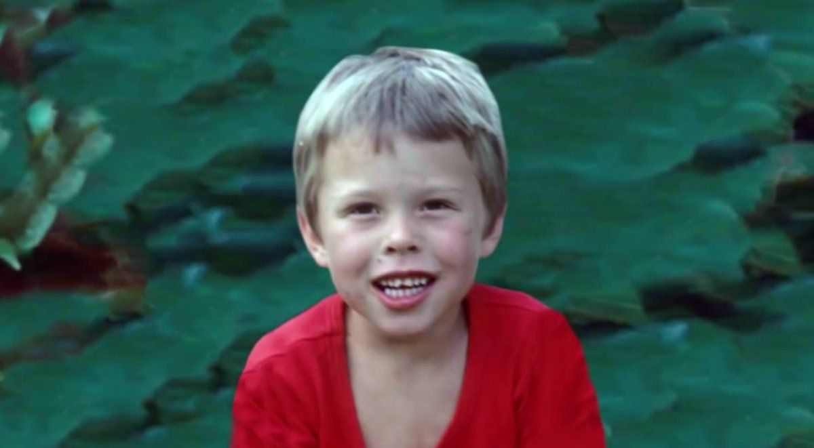

Event de Semi Truck et Roadster II en 2017
Qui Est Elon Musk ?
Elon Reeve Musk est un entrepreneur,ingénieur et homme d'affaire sud-africain, canadien et américain en 2002.Il a crée son primeir jeux video Blaster quand il avait 12 ans seulement.Fondateur de plusieurs entreprises: Zip2 en 1995, X.com en 1999 qui est devenu Paypal avant d'etre vendu à eBay pour 1,5 milliard de dollars en 2002, SpaceX en 2002 et rejoint Tesla en 2003.
Musk est devenu multimillionaire dans ses vingtaines et l'un des plus influenceurs au monde.
L'enfance De Elon Musk

Elon Reeve Musk est naît le 28 juin 1971 à Pretoria, en Afrique du Sud. Il est le fils d'Errol Musk, ingénieur anglo-sud-africain, et de Maye Haldeman, nutritionniste et mannequin canadienne. Après le divorce de ses parents en 1980, il continue de vivre avec son père à l'age de 10 ans.
Il est le binjamin de la famille Musk, il a un frére Kimbal Musk et une soeur Tosca Musk. Selon son frére, Kimbal, Elon Musk aurait très tôt lu deux livres par jour dans des disciplines variées. Ses lectures étaient très larges et diverses, couvrant de nombreux domaines comme la philosophie, la religion, la science-fiction et la programmation, l'ingénierie, le business, la technologie, le design de produit, l'énergie.
Elon était introvert et a souffert d'intimidation jusqu'à l'age de 15 ans où il a appris à se défendre par lui-meme.
Etude
En 1988 (17 ans), à la fin de ses études au Pretoria Boys High School, il annonce à ses parents qu'il souhaite aller étudier aux États-Unis. Il obtient alors la nationalité canadienne grâce à sa filiation maternelle, et quitte l'Afrique du Sud pour Kingston, en Ontario (Canada). Pour Musk, la nationalité canadienne lui permet de pouvoir émigrer ensuite aux États-Unis pour étudier, plus facilement qu'en venant de l'Afrique du Sud de l'apartheid. Cela lui évite aussi d'être appelé sous les drapeaux en Afrique du Sud et de faire son service militaire. En désaccord, son père lui coupe les vivres. Au Canada, il intègre alors l'Université Queen's et finance ses études grâce à des travaux à temps partiel et des emplois d'été en informatique. Il en ressort diplômé en administration en 1992.
En 1992, il quitte le Canada pour les États-Unis et intègre l'université de Pennsylvanie pour y étudier la physique et l'économie, finançant ses cours grâce à une bourse. Il y étudie trois ans, recevant un diplôme de premier cycle après ses deux premières années, et y reste une année de plus pour terminer une majeur en physique et faire de son diplôme de premier cycle un « joint honours degree ». En 1995, il reçoit une bourse pour poursuivre un doctorat en physique énergétique à l'université Stanford. Cependant, il prit conscience rapidement du développement d'Internet à l'époque et il va suspendre la préparation de son programme à peine deux jours après la confirmation de son admission pour lancer sa société.